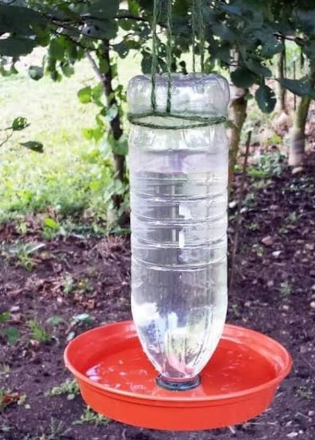

Assignments
Social Pathashala

At the moment all the work is being done online due to the lock down, At this moment Anima Drive is engaged in getting a good life for the lifeless, to develop the students' love and loyalty towards them, We have prepared an initiative in which students will have to make vessel to keep water for the birds by using a bottle lying at home .It has to be prepared by a student and has to kept on the trees or at such places of their homes where birds come.
Important information to pay attention to:
1. The method to make this project is in the link sent by us.
2. After completing the social project, the student has to take two pictures of which one picture should be with the project like as

and the second picture must be clicked by keeping the project in its proper place from where birds will drink water like as

and also the student has to send the second picture in the Whats app group mentioned by the teacher with their name and class.
3. It is mandatory for all students to do this project.
4. Teachers should submit the project work from all the students in the given time and send it to the given contact details of the Anima Drive.
5. School Cordinator & Students who showed their social responsibility by participating in this initiative will be given a Commendation Certificate from Anima Drive, in which they will be shown the role of playing an important role during Corona.
6. You can contact us for more information.